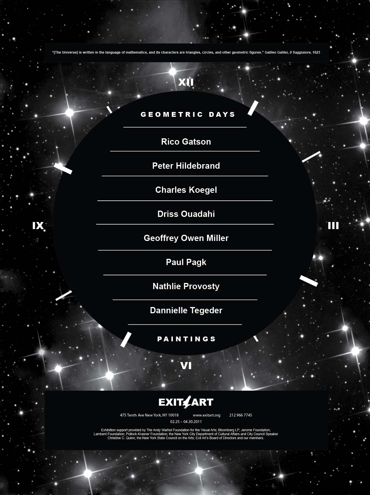

Exit Art, Curatorial Intern
Autotopia: Cars for a better future
Curated by Herb Tam and Lauren Rosati
April 8 – April 30, 2011
Curated by Herb Tam and Lauren Rosati
April 8 – April 30, 2011
The exhibition, an initiative of SEA (Social Environmental Aesthetics) focused on the history of the electric car and its relationship to technological developments, political and environmental factors.

Electric Cars, courtesy of the C0 2 E – Race.
Geometric Days
Curated by Papo Colo and Jeanette Ingberman with Herb Tam
February 25 – April 30, 2011
Curated by Papo Colo and Jeanette Ingberman with Herb Tam
February 25 – April 30, 2011
The exhibition invited eight artists whose work proposes alternatives to geometric abstraction’s historical ties to utopian idealism. Featuring Rico Gatson, Charles Koegel, Peter, Hildebrand, Geoffrey Owen Miller, Driss Ouadahi, Paul Pagk, Nathlie Provosty, and Dannielle Tegeder.

Exhibition poster for Geometric Days. Design by Margarita Yong.
Contemporary Slavery
Curated by Papo Colo and Jeanette Ingberman with Herb Tam
June 3 – August 5, 2011
Curated by Papo Colo and Jeanette Ingberman with Herb Tam
June 3 – August 5, 2011
Featuring the work of artists and photojournalists, the exhibition discusses the ongoing legacies of slavery and colonialism in the global economy, with photographs depicting images of prison labor, sex trafficking, sweatshops and farm worker exploitation.
Image courtesy of Stefan Irvine.